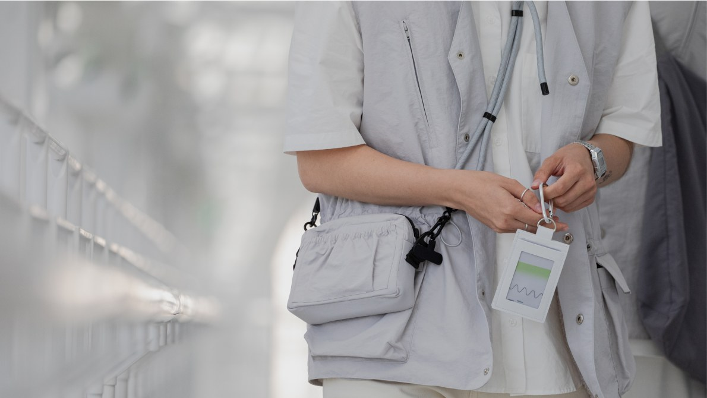
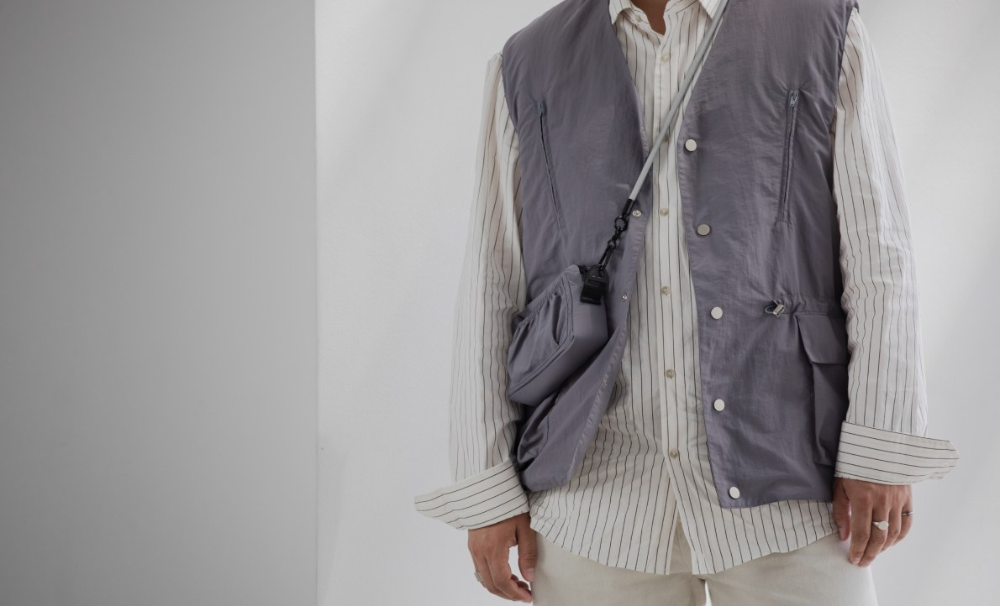
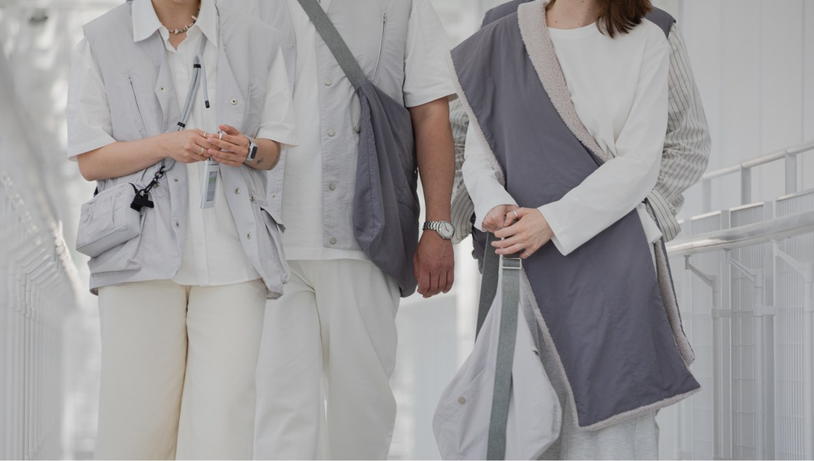
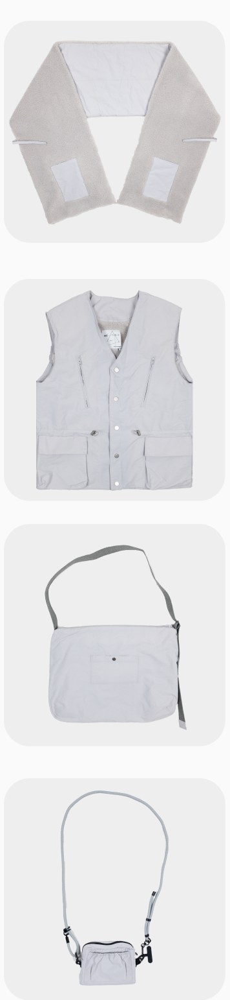

VAC foundation
Медиаторы ГЭС-2
Этот проект изначально был про другое — не про тираж, а про точность. Работа строилась на основе предоставленных эскизов, с минимальными объёмами и высоким требованием к детализации. Здесь не было возможности «спрятаться» за масштаб — каждая вещь проходила через этапы тестовых образцов, согласования кроя и финальных примерок на стороне заказчика.



Процесс развивался как совместная работа. Решения принимались не заранее, а по ходу — через проверку, корректировку и уточнение. Часть элементов потребовала отдельной проработки и производства вне стандартного контура, включая заказ компонентов у внешних поставщиков. Это добавляло сложности, но позволяло сохранить нужный уровень качества и точности.

Небольшой тираж — по 50 единиц на модель и 25 на цвет — в таких условиях становится не упрощением, а наоборот, усилением требований к продукту. Здесь важно не «сшить», а добиться совпадения идеи и реализации в каждом экземпляре. Этот проект — пример того, как продукт собирается через внимательную работу с деталями и постоянное взаимодействие с заказчиком.